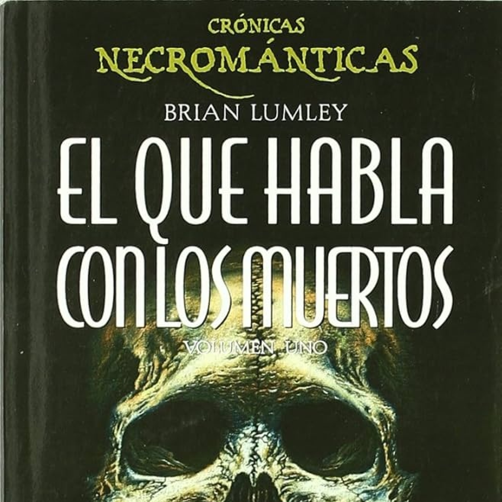
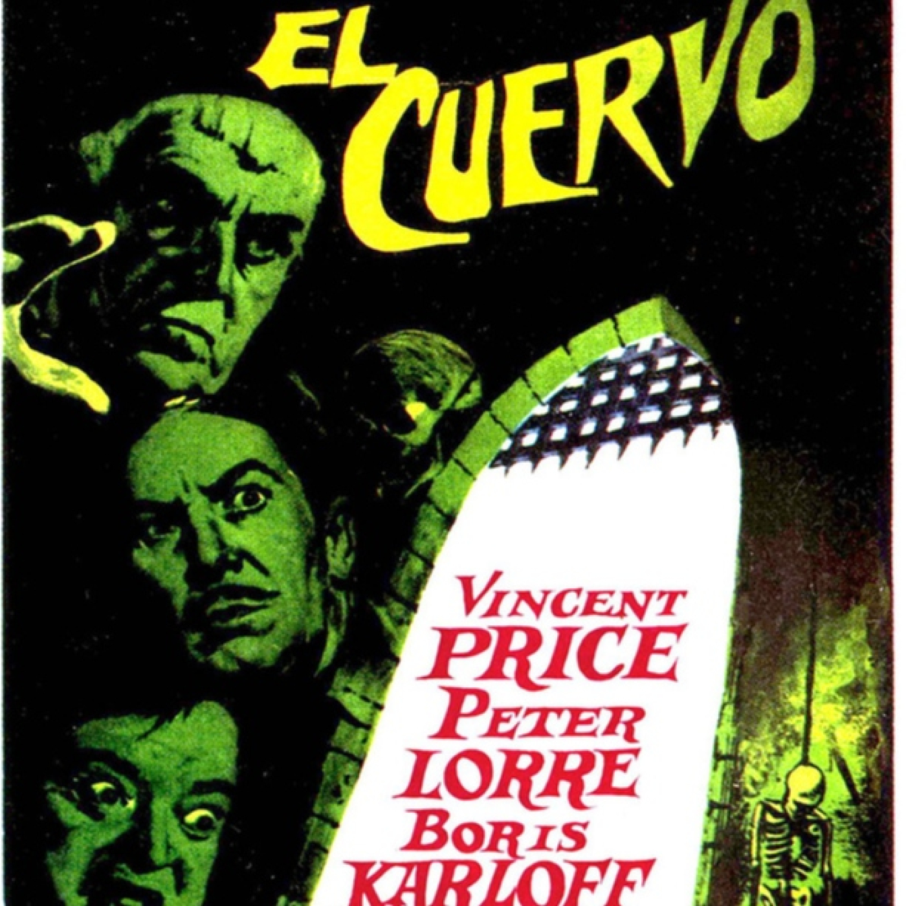

15 de mayo de 2026"El que habla con los muertos" de Brian Lumley2026

5 de agosto de 2026"El cuervo" de Roger Corman 1 de mayo de 2026Tres secuelas, tres
1 de mayo de 2026Tres secuelas, tres 24 de abril de 2026Herzog y la verdad extática
24 de abril de 2026Herzog y la verdad extática 17 de abril de 2026"Agency" de William Gibson
17 de abril de 2026"Agency" de William Gibson 4 de octubre de 2026"Historias de terror" de Roger Corman
4 de octubre de 2026"Historias de terror" de Roger Corman 27 de marzo de 2026"Le llaman Bodhi" de Kathryn Bigelow
27 de marzo de 2026"Le llaman Bodhi" de Kathryn Bigelow 20 de marzo de 2026"Nuestra parte de noche" de Mariana Enríquez
20 de marzo de 2026"Nuestra parte de noche" de Mariana Enríquez 13 de marzo de 2026La Familia Addams: maneras de vivir
13 de marzo de 2026La Familia Addams: maneras de vivir 3 de junio de 2026Monstruo/Metáfora
3 de junio de 2026Monstruo/Metáfora 27 de febrero de 2026"La obsesión" de Roger Corman
27 de febrero de 2026"La obsesión" de Roger Corman 20 de febrero de 2026Adaptaciones: "Cumbres borrascosas" y todo lo demás
20 de febrero de 2026Adaptaciones: "Cumbres borrascosas" y todo lo demás 13 de febrero de 2026"Acero azul" de Kathryn Bigelow
13 de febrero de 2026"Acero azul" de Kathryn Bigelow 2 de junio de 2026"Pánico al amanecer" de Kenneth Cook
2 de junio de 2026"Pánico al amanecer" de Kenneth Cook 30 de enero de 2026"Cosmos" de Witold Gombrowicz
30 de enero de 2026"Cosmos" de Witold Gombrowicz 24 de enero de 2026Se busca explicación para Terence Hill y Bud Spencer
24 de enero de 2026Se busca explicación para Terence Hill y Bud Spencer 16 de enero de 2026"El pozo y el péndulo" de Roger Corman
16 de enero de 2026"El pozo y el péndulo" de Roger Corman 1 de septiembre de 2026"Carmilla" de Sheridan Le Fanu
1 de septiembre de 2026"Carmilla" de Sheridan Le Fanu 2 de enero de 2026"El ansia" de Tony Scott
2 de enero de 2026"El ansia" de Tony Scott2025
 26 de diciembre de 2025"Azrael" de E. L. Katz
26 de diciembre de 2025"Azrael" de E. L. Katz 19 de diciembre de 2025Coaching literario
19 de diciembre de 2025Coaching literario 12 de diciembre de 2025"Corazón salvaje" de Barry Gifford y David Lynch
12 de diciembre de 2025"Corazón salvaje" de Barry Gifford y David Lynch 5 de diciembre de 2025"Los viajeros de la noche" de Kathryn Bigelow
5 de diciembre de 2025"Los viajeros de la noche" de Kathryn Bigelow 28 de noviembre de 2025"Snake Eyes" de Brian De Palma
28 de noviembre de 2025"Snake Eyes" de Brian De Palma 21 de noviembre de 2025"One battle after another" de Paul Thomas Anderson
21 de noviembre de 2025"One battle after another" de Paul Thomas Anderson 14 de noviembre de 2025Presentación "El corazón revolucionario del mundo"
14 de noviembre de 2025Presentación "El corazón revolucionario del mundo" 7 de noviembre de 2025Especial Poloween: Trilogía Re-Animator
7 de noviembre de 2025Especial Poloween: Trilogía Re-Animator 24 de octubre de 2025Así se empieza
24 de octubre de 2025Así se empieza 17 de octubre de 2025"La caída de la Casa Usher" de Roger Corman
17 de octubre de 2025"La caída de la Casa Usher" de Roger Corman 10 de octubre de 2025"Weapons" & "Barbarian'de Zach Cregger
10 de octubre de 2025"Weapons" & "Barbarian'de Zach Cregger 3 de octubre de 2025Ciclo Cronenberg: "Los sudarios"
3 de octubre de 2025Ciclo Cronenberg: "Los sudarios" 26 de septiembre de 2025El ruido impenetrable
26 de septiembre de 2025El ruido impenetrable 19 de septiembre de 2025Los dolores de cabeza de la crítica
19 de septiembre de 2025Los dolores de cabeza de la crítica 12 de septiembre de 2025"Se anuncia un asesinato" de Agatha Christie
12 de septiembre de 2025"Se anuncia un asesinato" de Agatha Christie 5 de septiembre de 2025"Horizonte Final" de Paul W. S. Anderson (el Bueno)
5 de septiembre de 2025"Horizonte Final" de Paul W. S. Anderson (el Bueno) 29 de agosto de 2025Alien vs Predator 1 & 2
29 de agosto de 2025Alien vs Predator 1 & 2 23 de agosto de 2025"Prometheus" & "Alien: Covenant"
23 de agosto de 2025"Prometheus" & "Alien: Covenant" 25 de julio de 2025"Carretera Perdida" de David Lynch
25 de julio de 2025"Carretera Perdida" de David Lynch 18 de julio de 2025"Lamb" y el worldbuilding
18 de julio de 2025"Lamb" y el worldbuilding 11 de julio de 2025"DOOM", los videojuegos
11 de julio de 2025"DOOM", los videojuegos 4 de julio de 2025Lo que tiene que decir Joe Abercrombie
4 de julio de 2025Lo que tiene que decir Joe Abercrombie 27 de junio de 2025"Ghost Dog" de Jim Jarmusch
27 de junio de 2025"Ghost Dog" de Jim Jarmusch 20 de junio de 2025Rancho Drácula: Ciclo De Palma: "Carlito's Way"
20 de junio de 2025Rancho Drácula: Ciclo De Palma: "Carlito's Way" 13 de junio de 2025"Minority Report", el relato y la película
13 de junio de 2025"Minority Report", el relato y la película 6 de junio de 2025Recuerdos catódicos
6 de junio de 2025Recuerdos catódicos 30 de mayo de 2025Twin Peaks y Expediente X, el desorden y la sugerencia
30 de mayo de 2025Twin Peaks y Expediente X, el desorden y la sugerencia 23 de mayo de 2025Narrativas de lo Oculto
23 de mayo de 2025Narrativas de lo Oculto 16 de mayo de 2025"Posesión" de Andrzej Zulawski
16 de mayo de 2025"Posesión" de Andrzej Zulawski 9 de mayo de 2025"Temporada de huracanes" de Fernanda Melchor
9 de mayo de 2025"Temporada de huracanes" de Fernanda Melchor 2 de mayo de 2025Piranesi
2 de mayo de 2025Piranesi